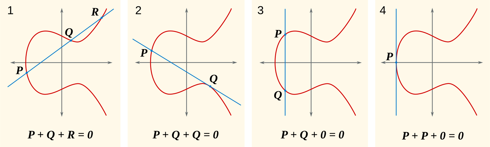

网络基础 · HTTPS
敲下回车到页面出现，前面一小半时间不在"下载"，而在"对话"——先和服务器对齐 TCP 序号，再完成 TLS 建连、密钥交换、加解密。这篇把全过程拆到每一步：为什么是三次、密钥为什么不走网络、加密到底加在哪一层，以及怎么用命令亲眼看见它们。
打开 DevTools 的 Timing 面板看一次页面加载：DNS 解析完之后，先有一段 Initial connection，再来一段 SSL，然后才轮到 Request sent 和下载。这两段就是 HTTPS 建连的上下两半——TCP 握手建立"可靠通道"，TLS 在这条通道里建立"信任"。通道没建好，一个字节都发不出去；信任没建好，发出去的也是明文。
日常工作里撞上它们，往往是两条完全不同的报错：Connection timed out——TCP 三次握手没完成，查网络通不通、防火墙放没放行；SSL certificate problem——TCP 早就握上了，卡在 TLS 的证书验证，查证书过期、域名不匹配、信任链缺根。同一个"连不上"，卡在哪一层，修法完全不同。分不清这两层，排查就只能靠猜。
这一期就把从敲下回车到发出第一个 HTTP 请求之间的全过程讲透：TCP 握手对齐什么、为什么必须是三次、连接怎么体面地收尾；TLS 建连四步怎么走、会话密钥为什么两边各算一把、握手之后的每条数据是怎么被加密的——以及，怎么亲眼看一次。
TCP 是按字节编号的协议：每个字节都有序号，接收方靠序号去重、排序、确认。"哪边发到哪了"必须两边一致，所以连接建立的第一件事是交换各自的初始序列号（ISN），顺便确认"你发的我能收、我发的你能收"。这就是三次握手：
为什么必须是三次，两次不行？RFC 9293（2022 年 8 月发布的现行 TCP 规范，取代 43 岁的 RFC 793）在 §3.5 给了标准答案，原话是："三次握手的主要目的，是防止历史上重复的连接请求造成混乱。"场景是这样：一个在网络里迷路很久的旧 SYN 迟迟才到，服务端收到 SYN 时无法分辨它是新请求还是旧包裹——如果收 SYN 就直接建连，这个对方早已放弃的旧包会开出一条"客户端毫不知情"的僵尸连接，占着端口和内存。三次握手的第三次 ACK 正是留给服务端的核对机会：旧 SYN 进来后服务端回 SYN+ACK，真客户端一看 ack 对不上自己发出的序号，回一个 RST 把连接拆掉，服务端安全回到监听。两次握手没有这个环节。
还有一条容易被忽略的规则：初始序列号不是从零开始的，而是随机的。RFC 9293 要求用"单调递增时钟 + 外部无法推算的伪随机函数"生成——一方面让旧连接的迟到报文落在新连接的序号窗口之外，另一方面防攻击者猜测序号伪造报文注入。
有建立就有关闭，而且关闭比建立多一次——因为 TCP 是全双工，两个方向要各自关一次：
主动方发 FIN
"我这边发完了"
FIN 占一个序号
对端回 ACK
"知道你发完了"
它自己还能继续发（半关闭）
对端发 FIN
"我也发完了"
数据发完才发，所以晚一步
主动方回 ACK
进入 TIME_WAIT
等 2×MSL 再销毁
RFC 9293 要求等待 2×MSL（报文最大生存时间，规范建议值 2 分钟）：一是兜底重传最终 ACK（它丢了对方会重发 FIN），二是让本连接迷路的旧报文自然消亡，免得污染四元组相同的新连接。Linux 内核把这段时间实现为固定 60 秒（TCP_TIMEWAIT_LEN）
TCP 只保证"送到、按序、不丢"，不保证保密，也不验证身份——链路上任何一环都能窃听、篡改、冒充。HTTPS 里的 S 就靠 TLS（传输层安全，当前主流版本 TLS 1.3，RFC 8446，2018 年 8 月发布）在 TCP 之上补三件事：协商加密算法、商定会话密钥、验证服务器身份。TLS 1.3 建连只要一个往返，四步走完：
逐步看四个动作各自在干什么：① ClientHello 是客户端的"能力清单"——我支持这些版本、这些密码套件、这条椭圆曲线，并且直接附带自己这次连接的密钥交换公钥（key_share 扩展），这是 1.3 省 RTT 的关键：不等协商完再要公钥，第一次就把材料备齐。② ServerHello 是服务端的"拍板"——选定版本、套件、曲线，附上自己的 key_share。至此密钥交换所需的全部材料已经到位，两边各自算出同一把会话密钥（下一段细讲），从下一条消息起全部加密。③ 服务端密文三连：证书链（我是谁，由谁担保）、CertificateVerify（用证书私钥对整段握手签名，证明"我"就是证书的主人，且握手中途没被篡改）、Finished（对整段握手的校验码）。④ 客户端回自己的 Finished——验完证书、验完签名，再用校验码确认双方密钥一致，建连收口，第一条 HTTP 请求当场就能塞进这条加密通道。
最反直觉也最核心的一步：会话密钥从头到尾没有在网络上传输过。TLS 1.3 强制使用 ECDHE（椭圆曲线临时 Diffie-Hellman）：
四步：双方各自随机生成一次性私钥（x、y），私钥从不出本机；只交换各自派生的公钥（xG、yG，G 是协商好的曲线基点）；客户端计算 x·(yG)，服务端计算 y·(xG)，乘法可交换，两边算出同一个共享秘密 xyG；最后用 HKDF 密钥派生函数把它扩成一串密钥材料——握手期收发各一把、应用期收发各一把，互不混用。窃听者拿到了 xG 和 yG 也无济于事：从 xG 反推 x 是椭圆曲线离散对数问题，算力上不可行，这就是"单向门"。
"乘法"到底在乘什么？看一张真实的几何原理图（维基百科经典三格图）：两点相加，是连线与曲线的第三个交点沿 x 轴反射；一个点自己加自己，连线换成切线。所谓乘 n，就是从基点出发做 n 次这样的加法、一路"走"到落点——公钥是落点位置，私钥是走了多少步。客户端在服务端的落点上再走 x 步，服务端在客户端的落点上再走 y 步，先走谁的步都一样，终点必是同一个点：这就是"两边各算"能殊途同归的几何根据，也是外人拿到落点却算不出步数的单向门。

图源：Wikipedia · Elliptic curve point multiplication（ECClines.svg，CC BY-SA 授权）
x、y 只活在这一次连接里。哪怕服务器的证书私钥日后泄露，攻击者翻出今天录下的全部密文，也没有 xyG 可用——历史流量依然解不开。TLS 1.3 把它做成强制，并砍掉了 TLS 1.2 的静态 RSA 密钥交换（那种模式密钥材料要用服务器公钥加密传输，私钥一泄历史全泄）
握手结束后，两边手里有同一组对称密钥，之后所有数据走记录层（record），逐条加密。这是混合加密的设计：非对称密码（慢）只在建连时用，传输全程用对称密码（快）。三个要点把"怎么加解密"讲完整：
会被验签拦下。示意：连接的固定 IV 由握手派生、双方一致，第 5 条记录的 nonce = IV ⊕ 5。攻击者重放这条旧密文时，服务器的计数器已走到 6，用 IV ⊕ 6 去验一条用 IV ⊕ 5 加密的记录，标签必然对不上，直接丢弃——防重放就焊在"每条记录一个独立 nonce"里，重排、截断同理。
因为解密需要的 xyG 从未在网络上出现过。网上飞的只有双方公钥，而公钥反推私钥是算力不可行的单向门；真正的密钥材料是两边本地计算出来的。中间人手里没有 x 也没有 y，凑不出 xyG，也就派生不出任何一把会话密钥。
派生链：共享秘密不是直接拿来加密的。它先与 0-RTT 的早期秘密汇合，逐级 HKDF-Extract：早期秘密 → 握手秘密 → 主秘密，每一级再 HKDF-Expand 出收发两个方向各自的流量密钥（握手期两把、应用期两把，0-RTT 再加一把）。分级的好处：握手期的密钥在建连完成后即可丢弃，应用数据的密钥不受握手消息影响，0-RTT 的弱密钥也污染不到正式数据。
TLS 1.2 的差距：完整握手要 2 个 RTT——ClientHello → ServerHello + Certificate + ServerHelloDone → ClientKeyExchange + ChangeCipherSpec + Finished → ChangeCipherSpec + Finished，客户端发完第二趟才能发业务数据。RSA 密钥交换是把预主密钥用服务器公钥加密传过去，没有前向保密；握手主体明文，证书裸奔在链路上（中间设备能看到 SNI 和证书信息正是这个原因）。1.3 砍掉 RSA 交换、强制临时 DH、ServerHello 后全加密、往返砍半——安全性和速度一起赚。
# curl 缺省不输出任何计时，-w 要显式给格式
curl -so /dev/null -w 'TCP %{time_connect}s | TLS %{time_appconnect}s | 首字节 %{time_starttransfer}s\n' https://example.com
TCP 0.031s | TLS 0.092s | 首字节 0.147s三个时刻就是三个里程碑：time_connect 是TCP 三次握手完成，time_appconnect 是 TLS 建连也完成，两者之差就是 TLS 建连净耗时（TLS 1.3 下约等于一个 RTT 加证书验证与密钥计算）；time_starttransfer 是首字节到达。TLS 那 60 毫秒不是"网络慢"，是建连各付了一个往返——这也解释了为什么全站都在推连接复用和长连接：HTTP/1.1 起连接缺省就是持久连接（keep-alive），复用一条连接，握手只付一次。
openssl s_client -brief -connect example.com:443
CONNECTION ESTABLISHED
Protocol version: TLSv1.3
Ciphersuite: TLS_AES_256_GCM_SHA384
Verification: OK要完整校验得加 -verify_hostname 域名 和 -verify_return_error。做连通性诊断没问题，把"Verification: OK"当成"证书没问题"就会翻车
# ss 缺省只列已连接（ESTAB）；看 TIME_WAIT 要显式指定状态
ss -tan state time-wait | wc -l
128
# 只抓带 SYN/ACK 标志位的包：-i any 看所有网卡，-nn 禁止翻译地址和端口名
tcpdump -nn -i any 'tcp[tcpflags] & (tcp-syn|tcp-ack) != 0 and port 443'
12:01:33.101 IP 10.0.0.8.41822 > 93.184.216.34.443: Flags [S], seq 2837465021
12:01:33.219 IP 93.184.216.34.443 > 10.0.0.8.41822: Flags [S.], seq 195630932, ack 2837465022
12:01:33.219 IP 10.0.0.8.41822 > 93.184.216.34.443: Flags [.], ack 1抓包输出就是教科书落地：S 是 SYN，S. 是 SYN+ACK，. 是纯 ACK；注意第二行 ack 2837465022 = 对方 seq + 1——SYN 占一个序号在这里看得见摸得着。此外 tcpdump 不写 -i 时缺省抓"编号最小的非回环网卡"，多网卡机器上"抓不到包"十有八九是抓错了网卡，先 -i any。TLS 那半在 tcpdump 里只会看到一片密文——现在你知道为什么了：密钥从未走过网络。
纯 TLS 建连耗时：一个往返的传输，加证书链验证与 ECDHE 密钥计算。TLS 1.3 一个往返，TLS 1.2 要两个——所以老配置的站点这一段明显更长。
先回答"谁在频繁建连"：通常是你的程序在高频短连接里当主动关闭方。每个 TIME_WAIT 一分钟自愈，数量本身无害；根治靠连接池和长连接让握手少付，而不是改内核。非要动参数也先看清缺省值——tcp_tw_reuse 缺省 2，只允许回环地址复用，内核文档原话警告：非专家别改。
那是在端点本地看的：浏览器开发者工具、服务端日志，或者把 keylog 文件（SSLKEYLOGFILE）喂给 Wireshark——记录的是本机自己派生出的密钥，不是从网络上截获的。这也反过来印证：没有端点配合，中间人拿不到明文。
证书相关报错先分三类，各有各的修法：
certificate has expired——证书过期。服务器该续期了；但客户端系统时间错乱也会报这个，先看本机时间。hostname mismatch——访问的域名不在证书的 SAN 列表里。比如拿 IP 直连一个只签了域名的证书。unable to get local issuer certificate——信任链缺根，典型于自签或企业内网 CA。修法是把根证书装进系统信任库，不是 -k 一关了之。-k（--insecure）关掉的是全部 TLS 保证
加密照跑，但对面是谁、报文有没有被篡改，一概不知。只留给一次性调试，别写进脚本和代码
再两条协议层面的：
tcp_syncookies 缺省 1——backlog 溢出时才启用无状态握手（把状态编码进序号回给客户端，真客户端 ACK 回来再重建连接）。内核文档自己强调它是"严重违反 TCP 协议"的兜底手段，不能当常规扩容用。TCP: time wait bucket table overflow——TIME_WAIT 数量顶到 tcp_max_tw_buckets 上限时，内核直接销毁最老的并打印这句。它只防简单 DoS，文档明确警告"不要人为调低这个上限"，遇到它该加不是该减；但更该问的还是那句话：谁在大量建短连接？
| TLS 1.2（2008） | TLS 1.3（2018） | QUIC（2021） | |
|---|---|---|---|
| 建连往返 | 完整握手 2 个 RTT | 1 个 RTT（复用可 0-RTT） | TCP+TLS 合成 1 个 RTT（复用 0-RTT） |
| 密钥交换 | RSA/静态 DH 仍可选，无前向保密 | 强制 ECDHE，全前向保密 | 内嵌 TLS 1.3，同左 |
| 握手明文暴露 | 证书可见 | ServerHello 之后全加密 | 几乎全程加密（仅固定包头明文） |
| 现状 | 主流浏览器 2020 年起弃用 | 当前主流（RFC 8446） | HTTP/3 的底座（RFC 9000） |
方向很清楚：更少往返、强制前向保密、更少明文。QUIC 更进一步——把"通道"和"信任"两次对话合成一次，用户态实现、基于 UDP，连线建立带上了传输层没有的灵活性。理解了 TCP 与 TLS 的建连全过程，QUIC 不过是把同一套事（对齐状态 + 商定密钥 + 验证身份）更紧凑地重做了一遍。
1. RFC 9293 说三次握手"必须三次"的主要理由是什么？
2. TLS 1.3 里，会话密钥是怎么到双方手上的？
3. 主动关闭连接的一方，最后停在什么状态、等多久？
4. openssl s_client 建连后显示 Verification: OK，能说明什么？
TCP 连接建立与终止的现行规范——三次握手、序号规则、TIME_WAIT 与 MSL 都在 §3.4–3.6：
RFC 9293: Transmission Control Protocol (2022，取代 RFC 793)
TLS 1.3 建连全流程、密钥派生、0-RTT 与安全性质（§2 及附录 E）：
RFC 8446: The Transport Layer Security (TLS) Protocol Version 1.3
TLS 1.2 的四趟报文流程与 ChangeCipherSpec（§7.3）：RFC 5246；Linux TCP 内核参数（syncookies、tw_buckets 等缺省值与官方警告）：kernel.org: ip-sysctl。